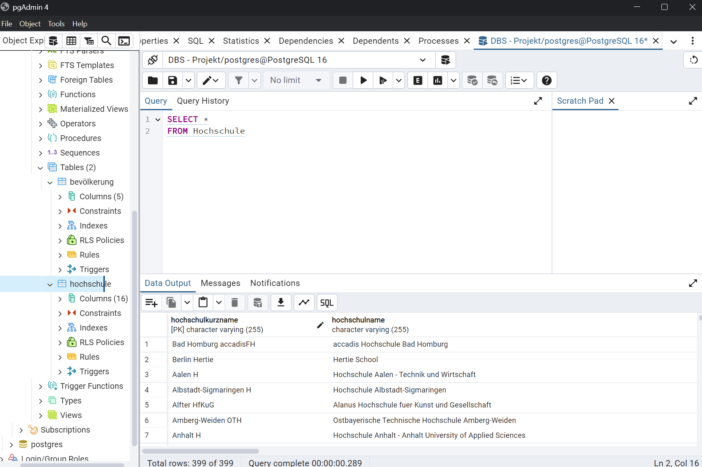

Datenbank-Projekt
Geographische Verteilung von Studierenden in Deutschland
Einleitung
Im Rahmen eines, im Vergleich zu vorherigen Aufgaben, umfangreicheren Abschlussprojekts des Moduls "DBS - Datenbanksysteme" werden die Ergebnisse des Projekts anschaulich visualisiert und dokumentiert.
Projektbeschreibung
Die Ausgangslage umfasst zwei Datentabellen "Hochschulen" und "Bevölkerung". Diese liegen im .csv-Format vor und erhalten Daten wie: Hochschulname, Bundesland, Stadt, Postleitzahl, Straße, Anzahl Studierende, etc. & für die Bevölkerung: Bundesland, Stadt, Postleitzahl, Anzahl Einwohner, etc.
Projektziele
- Bereinigung der Datensätze für Datenbank-Konsistenz
- Importierung der Datensätze in eine Postgre-Datenbank
- SQL-Abfragen für relevante Informationen aus den Relationen
- Visualisierung der sinnvollen SQL-Abfragen
- Erstellung einer Webseite zur Dokumentation des Projekts

Datenbereinigung
Die Datenbereinigung umfasst die Entfernung von Duplikaten, die Korrektur von Schreibfehlern (auch in Hinsicht auf korrekte Kodierung wie UTF-8), Entfernen von unvollständigen Datensätzen und die Anpassung von Datentypen.

Importierung der Datensätze
Die Datensätze werden in eine Postgre-Datenbank importiert. Hierbei wird auf die Einhaltung von Integritätsbedingungen geachtet. Dabei wurde PostgreSQL 16 mit pgAdmin 4 verwendet.
SQL-Abfragen
Die SQL-Abfragen umfassen die Extraktion von relevanten Informationen aus den Relationen "Hochschulen" und "Bevölkerung". Ich habe mich für zwei Abfragen entschieden, welche zum einen die Anzahl der Studierenden pro Ort und zum anderen die Anzahl der Studierenden pro Ort im Vergleich zur Einwohnerzahl (prozentual) darstellen.
Visualisierung
Die Visualisierung der SQL-Abfragen erfolgt mittels Python und der Bibliothek Geopandas und Matplotlib. Die Visualisierung erfolgt in Form einer Karte von Deutschland mit Punktmarkierungen oder als Heatmap.
.png)
.png)